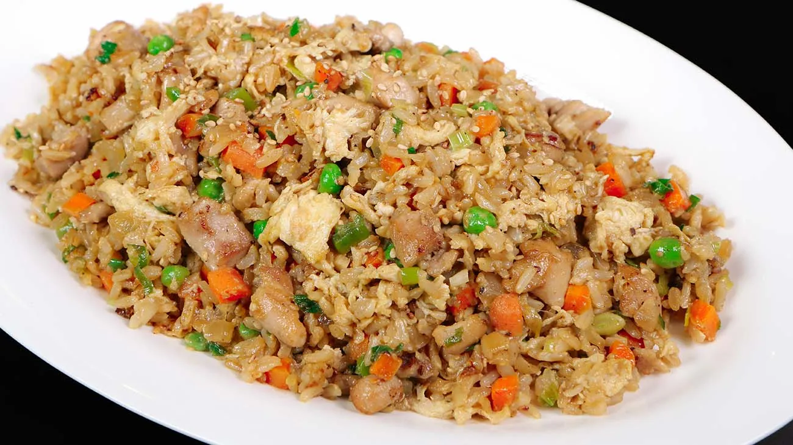

Chicken Fried Rice - Serves 3
Ingredients
- 2 teaspoons paprika
- 3/4 teaspoon salt
- 1/2 teaspoon garlic powder
- 1/2 teaspoon Cayenne pepper
- 1/2 teaspoon onion powder
- 1/2 teaspoon origano
- 1/2 teaspoon thyme
- 320g basmati rice
- 320ml water
- 2 chicken breasts
- 2 eggs
- Broccoli, peas and carrots to taste
- Splash of soy sauce
- Dash of olive oil
Steps
- In a small pot mix together the spices/herbs (all ingredients above the rice)
- Crack two eggs into a small bowl, mix yolk and whites
- Pat down chicken breast with a paper towel and dice
- Pour over then rub in spice mixture
- Set the chicken to one side
- Wash rice, then add to pressure cooker along with water and a dash of soy sauce. Stir to distribute the soy sauce
- Within pressure cooker, place mini bowl and stand into the rice then fill with vegetables as desired
- Set pressure cooker to cook on medium pressure for 12 minutes
- Preheat pan on medium heat
- Once pressure cooker has 10 minutes remaining add chicken to pan
- Once rice is cooked, remove from pressure cooker, place veg on the side and add rice to pan.
- Increase temperature to high, make space in the centre of the pan, add egg. Use spatula to break and spread egg before mixing into main rice body
- Serve with vegetables
Description
It sure isn't perfect, but its what I've come to like as a comfort food.